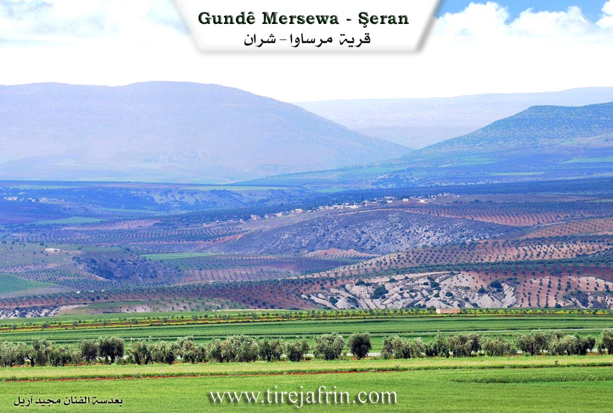
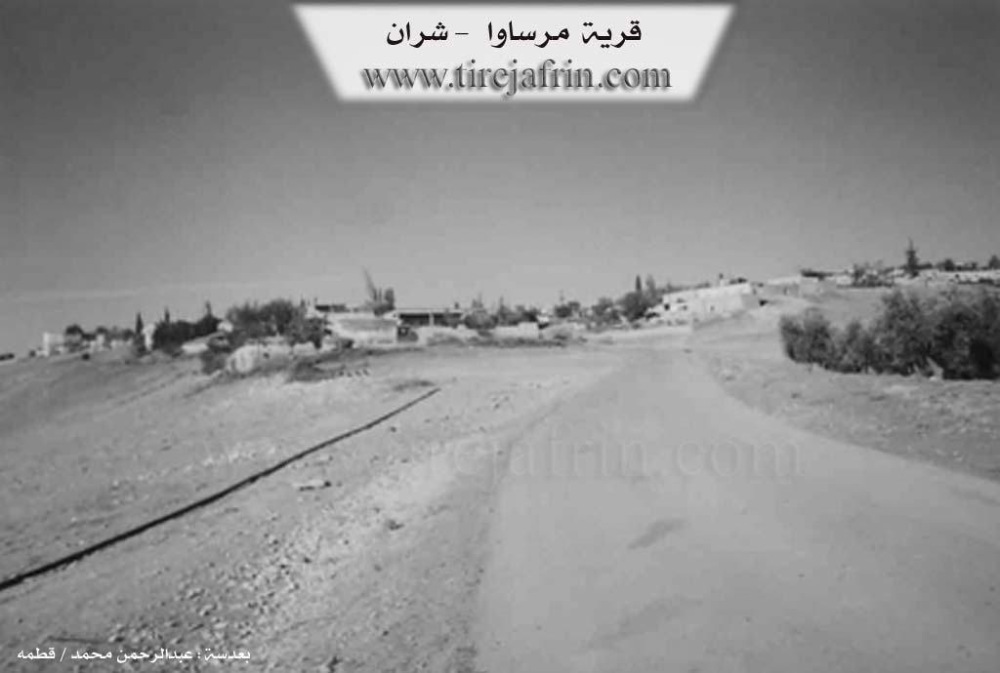

General Information
Nahiya (Subdistrict)
Şera
Also Known As
Marsawa, Mersa, Mersawa, Mersewa, Mersuva, مرساوا
Tribes
Bobena, Mecdem, Mersewa
Families, Clans, etc.
Ehmed Sora, Ehmedê Çewîş, Hemoyê Mêreme, Hesen Axa, Hesenê Mehmed Elî, Hisênê Reşko, Mehmûdê Birêm, Reşîdê Xirxiz, Xirxêzrasojî, Şeşê Reşko

Photos


Basic Information about Mersewa
Source: Ax û Welat
Etymology: Named after a woman named Merso, also known as Pîra Sipî
Foundation Date/Period: 1400 BCE
Hills: Girê Bîro
Shrines: Ziyareta Kersanê
Ruins: Kelehane Bîhoriyê, Pira Romaniya
Other Landmarks: Keleha Rêwendûz, Geliyê Sabûn, Sîkellê, Hahûrî, Geliyê Sefesî, Koşika Kurtê, Zeviyên Kersan, Zeviyên Kutik, Gundê Abîdanê
Summaries
I. Summary from TirejAfrin Site (English) of Mersewa
Source: https://www.tirejafrin.com/site/kura%20afrin%20%20sheran%20-%20Mersewa.htm
It is stated in the book Çiyayê Kurmênc Efrîn Geographical Study: Mersewa, 551 inhabitants - 290 hectares - 23 km - 410 m.
Mersewa: Name of a Kurdish tribe found in the districts of the city of Urfa. El-Esedî quoted from Bavê Armale and said: Merî Seba, meaning: Mar Saba.
It is a small village located on a rocky flat that slopes south towards Çemê Sabûn, and it is 1 km away from the Turkish border.
It is stated in the book Efrîn... Her River and Her Green Hills: Mersewa: A village in Çiyayê Kurmênc following the sub-district of Şeran, region of Efrîn, governorate of Heleb (535 inhabitants).
It is a small village located in the northern part of the mentioned mountain and on an agricultural plateau and atop a rocky flat in undulating land that slopes south towards Çemê Sabûn, which feeds the Efrîn river to the west. It is 32 km away from the town of Şeran towards the northeast and 1 km from the borders of Turkey towards the north. Its soil is clay.
It is bordered on the north by a plain with a distance of 500 m planted with olive trees and the Syrian-Turkish border point directly; on the south by a slope and a valley called Çemê Sabûn, a mountain chain, the castle of Kelha Nebî Hûrî, the village of Zeytûnak, the ancient Pira Romayî (Roman Bridge), and the shrine of Mazarê Nebî Hûrî; on the west by a deep valley, chains of plateaus, and the villages of Ebûdan and Heftaro; and on the east by a slope and a plain planted with olive trees and Şeltah.
The number of its houses is about 35 houses and the age of the village is about 150 years. Its houses are made of stones and mud with wooden roofs, and modern ones are of stones and reinforced concrete extending towards the south. On the outskirts, an electricity network and drinking water belonging to the state are available, as well as a primary school and a paved road up to the center of the village.
The residents work in rain-fed agriculture / olives, vines, grains / and raise sheep and goats.
Village Mukhtar: Hesen El-Ecar
Sources of Information:
- Book: جبل الكرد (عفرين) دراسة جغرافية Çiyayê Kurmênc (Efrîn): A Geographical Study by د. محمد عبدو علي Dr. Mihemed Ebdo Elî.
- Book: عفرين .... نهرها وروابيها الخضراء Efrîn... Her River and Her Green Hills by عبدالرحمن محمد Ebdulrehman Mihemed from the village of Qetme.
- Studies of Navenda Tirej Soft / Ebdulrehman Hacî Osman.
- Some residents of the villages.
Preparation and execution: Director of Tirej Efrîn site: Ebdulrehman Hacî Osman 20/12/2013
II. Summary of Mersewa from Ax û Welat
The village of Marsawa, situated in the Şera district of the Afrin region, serves as a historical and social bridge between the Kurd and Arab communities. Located just three kilometers from Kelehane Bîhoriyê and fifteen kilometers from the city of Kilîs, the village rests on the border line between Bakur and Rojava. According to local oral history recounted by an elder, the village name derives from a woman named Merso, also known as Pîra Sipî. Legend suggests that Merso led an ancient tribe in the area as far back as 1400 years before the modern era, facilitating trade routes that passed through to Keleha Rêwendûz.
The modern settlement history of Marsawa involves a diverse selection of migrations. The first family to settle there was Malbata Hesen Axa, though they eventually relocated to Kilîs. Subsequently, other families purchased land and established roots. The Reşîdê Xirxiz family arrived from Qoşo, while Malbata Hemoyê Mêreme came from Qere Tepe. The Şeşê Reşko family migrated from Qopela or Berkaşê, and the Çewîş family came from Hesen Dêra. Notably, the village is also home to Arab families who have integrated deeply into the community structure, including the Bobena tribe originally from Minbic and the Mecdem tribe from Zeytûnakê. Residents emphasize that Kurd and Arab neighbors share all aspects of life, from weddings to funerals, describing their bond as an inseparable brotherhood.
A prominent feature of local spiritual life is the Ziyareta Kersanê, a sacred site located near the village. Villagers, particularly on Wednesdays, visit this shrine to seek healing or blessings. The rituals involve slaughtering chickens and mixing the blood with soil from the shrine, a practice believed to cure illnesses and speech impediments. One resident shared a personal account of his daughter recovering her voice after a visit to Kersanê. The site is surrounded by ancient trees and remains a focal point for communal gatherings and meals.
The geopolitical location of Marsawa has deeply impacted its agricultural and social history. The village lands are bisected by the border with Turkey. An elder farmer named Xalê Cuma recounts that mines were laid in the area in 1954 and recounts a confrontation with a Turkish commander in 1962 regarding the seizure of their olive groves. Despite the physical division characterized by walls and minefields, the villagers maintain a psychological connection to the land on both sides. The village is also known for its martyrs, including Dilxwaz, Rêber, Şiyar, and Şêx Farûq, all of whom were of Arab origin but fought and died for the local Kurdish administration, further cementing the cross cultural unity of Marsawa.
Transcriptions and Subtitles
| Source | Video | Subtitles | Transcript |
|---|---|---|---|
| Ax û Welat 1 | Watch Video | Download SRT | View Transcript |
Foundation/Origin Information of Mersewa
Kurdish and Arab communities have coexisted for hundreds of years. Before the Turkish-Syrian border was established, Mersa was administratively tied to the city of Kilis. The new political line severed this connection, forcing original inhabitants to sell their property and move to Northern Kurdistan. This event led to the settlement of new families from surrounding villages like Qawsan, Qere Tepe, and Oplan.
Source: Ax û Walat Transcript
Possible Village Name Meaning of Mersewa
Mersewa is the name of a Kurdish clan that exists in the areas of Urfa city. Another theory is Mari Saba, meaning: Mar Saba.
Source: TirejAfrin Site
The village's name, originally Merso, originates from a prominent woman named Mersa of the Kurdish Rewandî Castle Tribe.
Source: Ax û Walat Transcript